Every adventure has a story. Every character has a purpose.
From lifelong friends to mysterious mythical creatures, the world of Forgotten Island is filled with unforgettable personalities. Discover the characters who make this adventure special.
The friendship at the heart of the adventure.
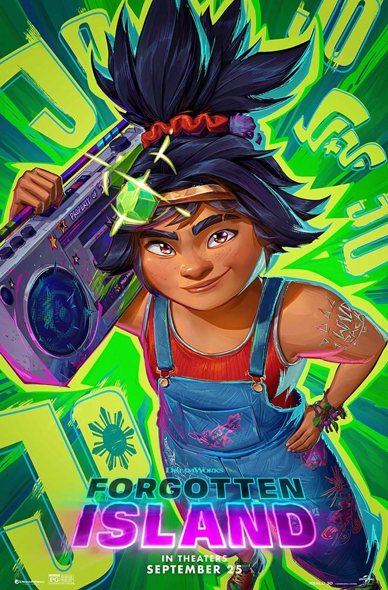
PROTAGONISTVoiced by H.E.R.
Jo is one of the two lifelong best friends at the center of the story. She is an aspiring artist who shares a deep connection with Raissa. Her adventurous journey to Nakali challenges her to face unexpected dangers. Throughout their adventure, Jo must hold on to the memories and friendship that mean so much to her.
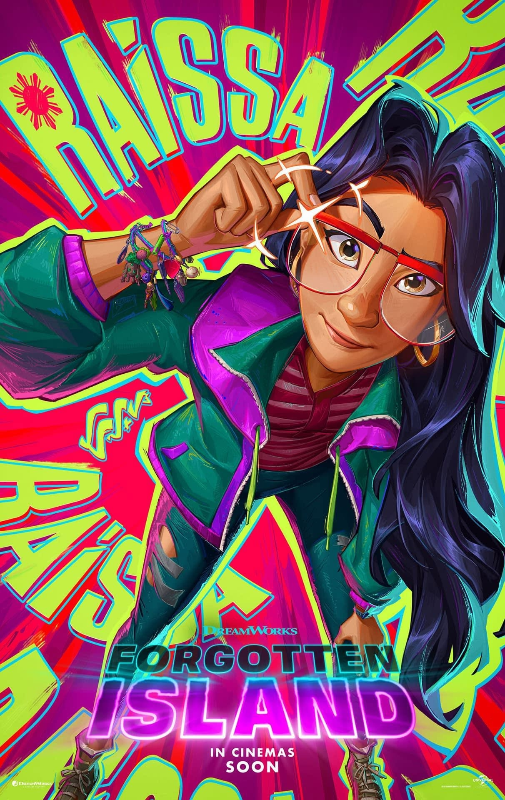
PROTAGONISTVoiced by Liza Soberano
Raissa is Jo's best friend, and the two have shared many important memories since childhood. As they prepare to follow different paths in life, their friendship is put to the test. In Nakali, Raissa must work together with Jo to overcome the challenges of the mysterious island and find their way home.
Meet the extraordinary creatures and mysterious beings who make Nakali an unforgettable place.
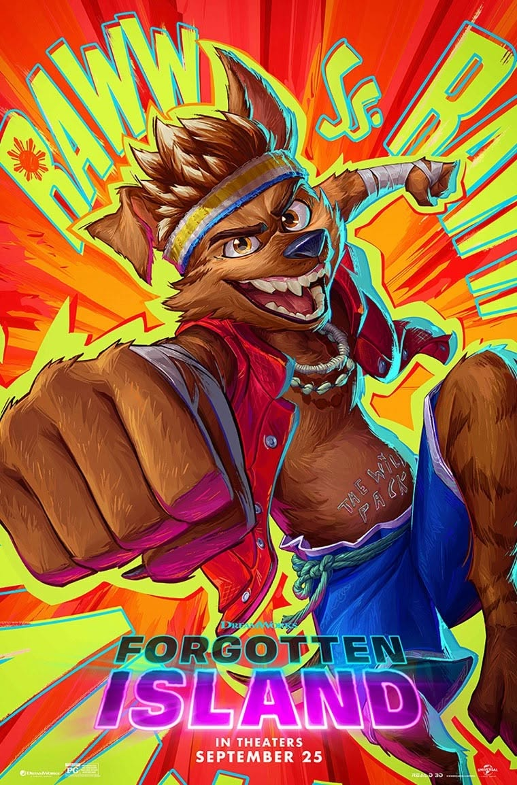
MAGICAL CREATUREVoiced by Dave Franco
Raww is a well-meaning but somewhat hapless weredog who becomes part of Jo and Raissa's adventure. He accompanies the friends as they navigate the strange world of Nakali. His presence adds humor and companionship to their journey.
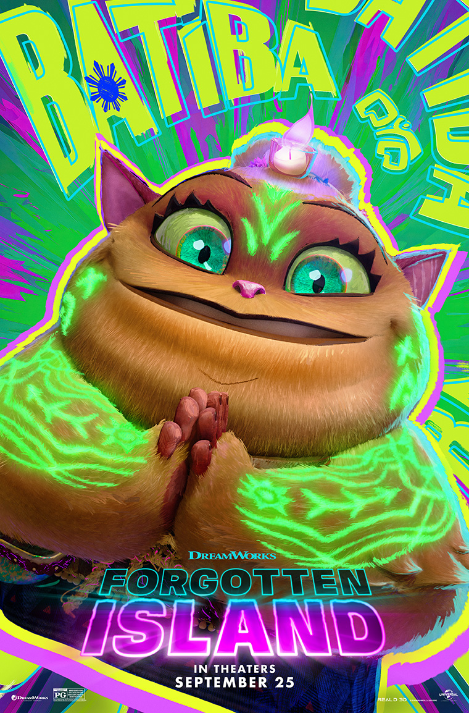
MAGICAL CREATUREVoiced by Jenny Slate
Batiba is a mysterious Batibat associated with sleep and memories. She offers Jo and Raissa a way to recover twhat they have forgotten, but her help comes with a difficult bargain. Her affectionate yet overbearing personality makes her one of Nakali's memorable inhabitants.
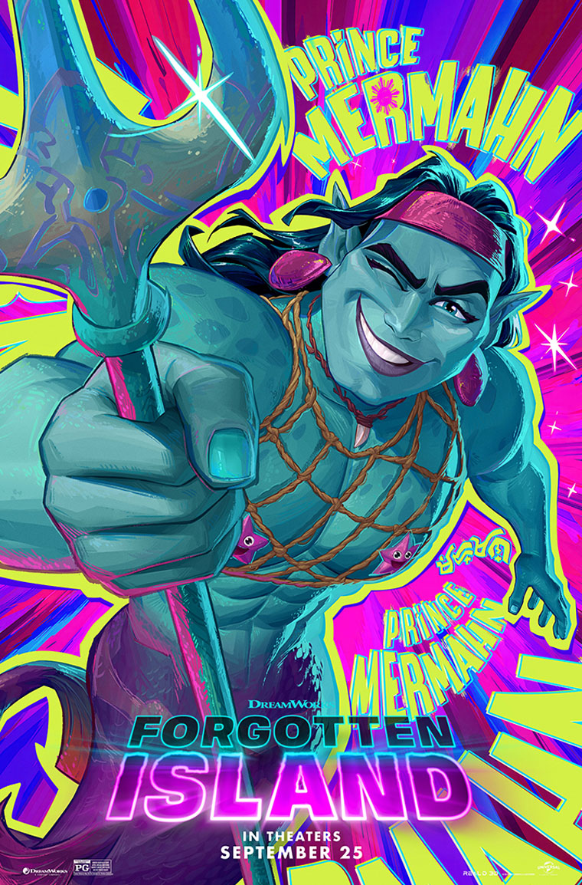
ROYALTYVoiced by Kevin McCann
Prince Mermahn is a royal member of the underwater Kataw Kingdom and the self-proclaimed Jewel of the Sea. Confident, theatrical, and proud of his royal status, he becomes an important part of Jo and Raissa's search for the missing portal key.
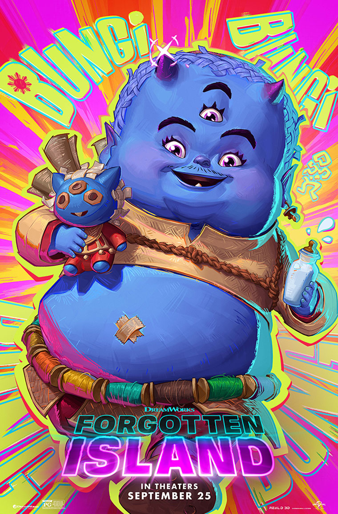
MAGICAL CREATUREVoiced by Manny Jacinto
Bungi is a giant, three-eyed Tiyanak with a childlike appearance and a close attachment to his mother, Bungina. Despite his unusual appearance, he has a sweet and playful personality. He helps Jo and Raissa uncover clues about their forgotten adventure.
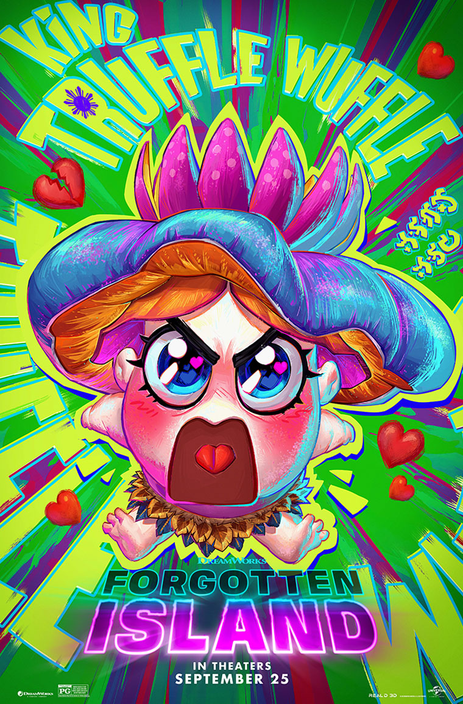
ROYALTYVoiced by Ronny Chieng
King Truffle Wuffle is the ruler of the Duwende, a group of small mythical beings living in Nakali. Despite his tiny stature, he takes great pride in his royal position and expects others to respect him and his people.
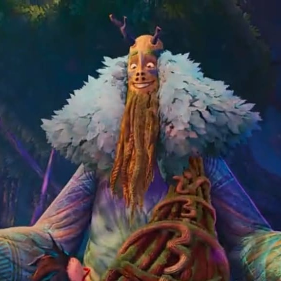
KAPRE CHIEFVoiced by Jo Koy
Datu is a friendly Kapre and an important figure among the inhabitants of Nakali. He is connected to Lola Fatima's past and helps make Jo and Raissa's adventure through the island more meaningful.
Discover the important family members who help shape Jo and Raissa's lives and memories.
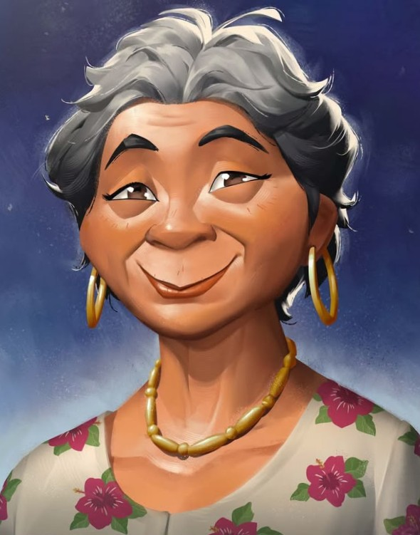
FAMILYVoiced by Dolly de Leon
Lola Fatima is Jo's beloved grandmother and an important connection to the magical world of Nakali. Through the stories and folklore she shares, she helps Jo understand the mysteries surrounding the island and its creatures.
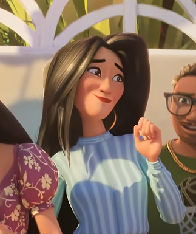
FAMILYVoiced by Amielynn Abellera
Jane Molina is Raissa's mother, who cares deeply about her daughter's education and future. She encourages Raissa to pursue her academic opportunities, contributing to the difficult decisions surrounding her daughter's next chapter in life.
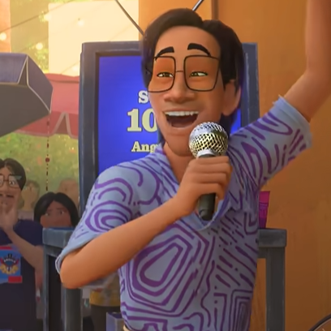
FAMILYVoiced by Januel Mercado
Manny Molina is Raissa's father and a member of the Molina family. He represents an important part of Raissa's home life as she prepares for new opportunities and changes in her future.
A powerful threat standing in the way of the friends.
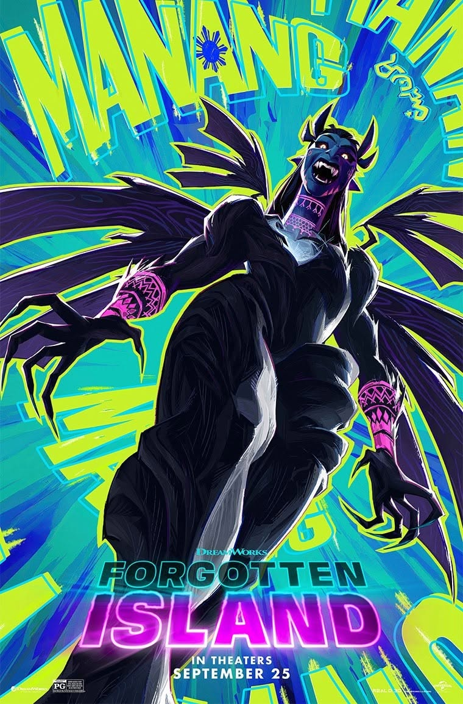
ANTAGONISTVoiced by Lea Salonga
Manang is the most feared creature on Nakali and a major threat to Jo and Raissa. Inspired by the Filipino mythical manananggal, she represents the frightening dangers that the friends must face while searching for their way home.